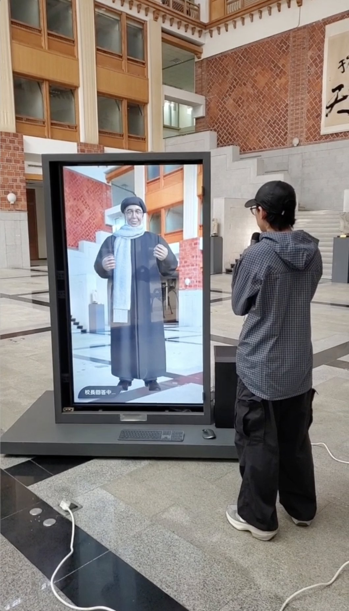
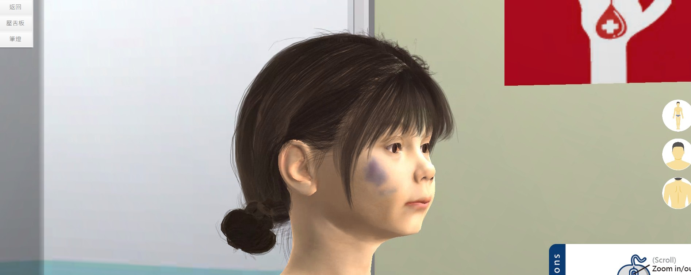
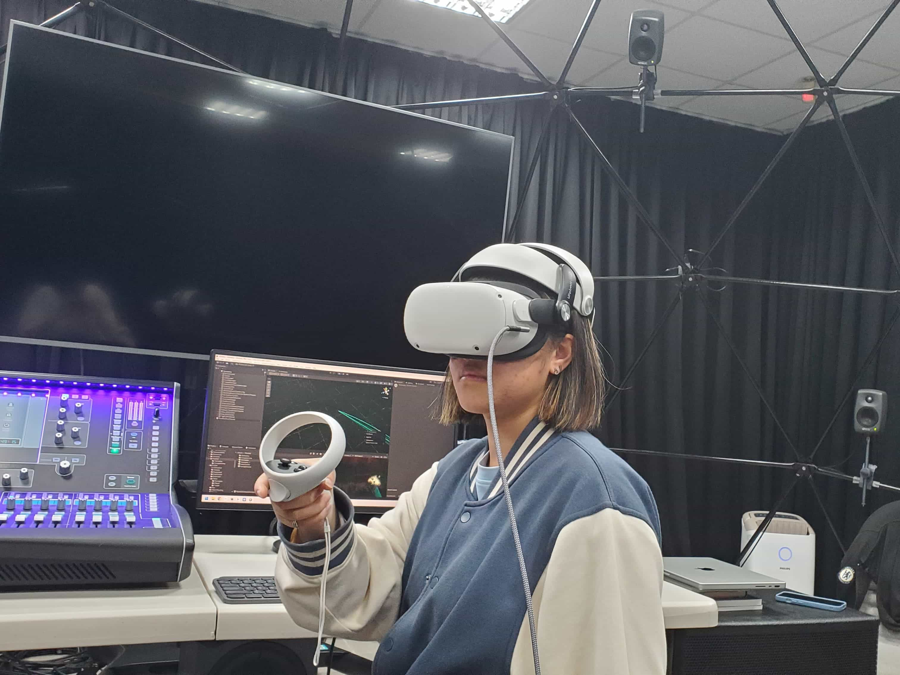
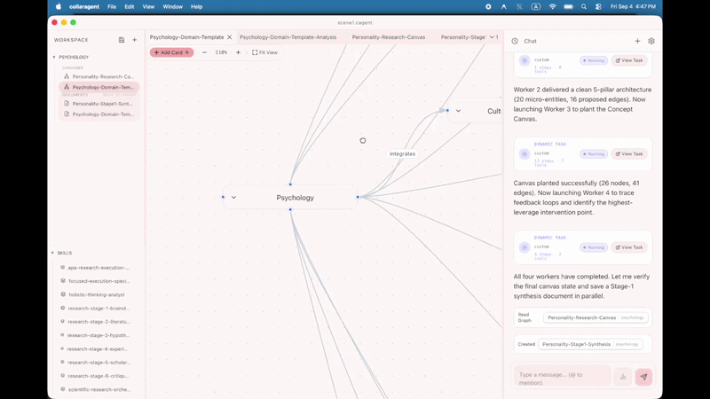

MRKE Ltd. · In-House 360 Hairstyle Viewer
I am Kim Fung.
I engineer Real-Time Interactive Systems, Multimodal AI Pipelines, and Runtime-Optimized 3D Applications. Grounded in systems engineering, low-latency interaction, and full-lifecycle software delivery.
My Works

TNNUA · Low-Latency Telemetry Streaming
Streamed synchronized AI motion capture and live audio across two simultaneous venues
Explore Case Study

Innova Medical · 3D Clinical UX
Synchronized 3D avatars with clinical ground truth across 50 cases
Explore Case Study
IEEE ICVR 2026 · VR Perception Research
Measured how vision hijacks hearing in VR under sustained spatial audio conflict
Explore Research Paper

Stratawright · Agentic Audio Workstation
A DAW that autonomous coding agents operate via CLI
Explore Case Study
CollarAgent · Visual Research Studio
An infinite canvas workspace where autonomous agents co-work on research
Explore Case Study
Empirical Research & Spatial Computing
Peer-reviewed Virtual Reality research on audio-visual sensory conflict published at IEEE ICVR 2026, paired with real-time 3D Gaussian Splatting scene reconstruction in Three.js.
Professional Track Record
Co-Founder & Software Developer (Interactive Systems)
MRKE Ltd.
Operated a fast-turnaround haircut business while building and continuously maintaining an in-house Unity C# 360 hairstyle viewer application, establishing daily frontline tracking logs and Google Cloud Storage OTA streaming to deploy updates with zero tablet downtime, cutting customer consultation ambiguity by 35 percent.
Systems Integration Engineer
National Tainan University of the Arts
Engineered local GPU multimodal AI pipelines (Speech-to-Text, LLM with RAG, Text-to-Speech) with real-time conversational state feedback, and developed an MQTT telemetry pipeline in Unity to synchronize live performance audio and motion capture, calibrated through continuous rehearsal trials against network jitter.
3D UX Designer
Innova Medical Technology
Audited 50 clinical simulation cases combining LLM dialogue with 3D virtual patients, collaborating with the engineer and medical expert across iterative schema reviews to resolve diagnostic discrepancies while preserving 60 FPS on legacy GTX 1060 GPUs.